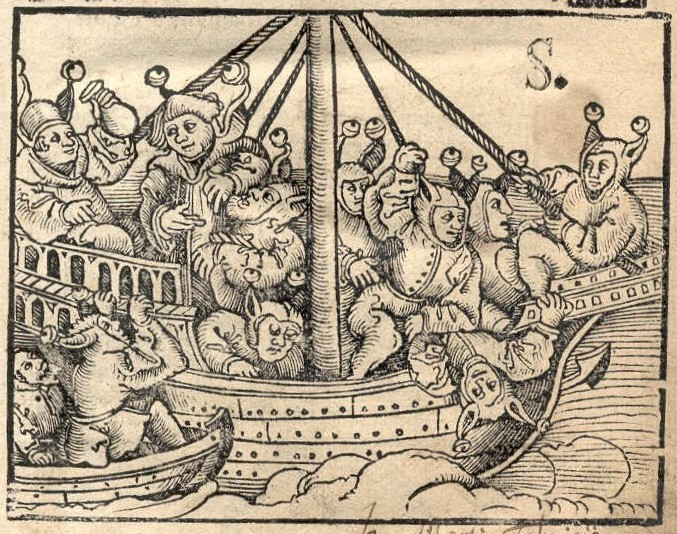

When citizens, instead of listening to the navigator, start fighting to get to the helm, the ship sails badly and will not reach its destination:

[..] For any one of us might say, that although in words he is not able to meet you at each step of the argument, he sees as a fact that the votaries of philosophy, when they carry on the study, not only in youth as a part of education, but as the pursuit of their maturer years, most of them become strange monsters, not to say utter rogues, and that those who may be considered the best of them are made useless to the world by the very study which you extol.CWell, and do you think that those who say so are wrong?
[Socrates] […] I am of opinion that they are quite right.
[Adeimantus] Then how can you be justified in saying that cities will not cease from evil until philosophers rule in them, when philosophers are acknowledged by us to be of no use to them?
You ask a question, I said, to which a reply can only be given in a parable. […] but now hear the parable, and then you will be still more amused at the meagreness of my imagination: for the manner in which the best men are treated in their own States is so grievous that no single thing on earth is comparable to it; and therefore, if I am to plead their cause, I must have recourse to fiction, and put together a figure made up of many things, like the fabulous unions of goats and stags which are found in pictures. Imagine then a fleet or a ship in which there is a captain who is taller and stronger than any of the crew, but he is a little deaf and has a similar infirmity in sight, and his knowledge of navigation is not much better. The sailors are quarrelling with one another about the steering—everyone is of opinion that he has a right to steer, though he has never learned the art of navigation and cannot tell who taught him or when he learned, and will further assert that it cannot be taught, and they are ready to cut in pieces anyone who says the contrary. They throng about the captain, begging and praying him to commit the helm to them; and if at any time they do not prevail, but others are preferred to them, they kill the others or throw them overboard, and having first chained up the noble captain’s senses with drink or some narcotic drug, they mutiny and take possession of the ship and make free with the stores; thus, eating and drinking, they proceed on their voyage in such manner as might be expected of them. Him who is their partisan and cleverly aids them in their plot for getting the ship out of the captain’s hands into their own whether by force or persuasion, they compliment with the name of sailor, pilot, able seaman, and abuse the other sort of man, whom they call a good-for-nothing; but that the true pilot must pay attention to the year and seasons and sky and stars and winds, and whatever else belongs to his art, if he intends to be really qualified for the command of a ship, and that he must and will be the steerer, whether other people like or not the possibility of this union of authority with the steerer’s art has never seriously entered into their thoughts or been made part of their calling.[1] Now in vessels which are in a state of mutiny and by sailors who are mutineers, how will the true pilot be regarded? Will he not be called by them a prater, a star-gazer, a good-for-nothing?
Of course, said Adeimantus.
[Socrates] Then you will hardly need, I said, to hear the interpretation of the figure, which describes the true philosopher in his relation to the State; for you understand already.
– Plato, The Republic, Book VI
The ship represents a city. The sailors compete with each other to take control of the rudder and thereby gain control of the ship. The sailor who wins becomes a pilot, or “the navigator”, “the one who steers”: “Ὁ κυβερνητικός”.
Food for thought: